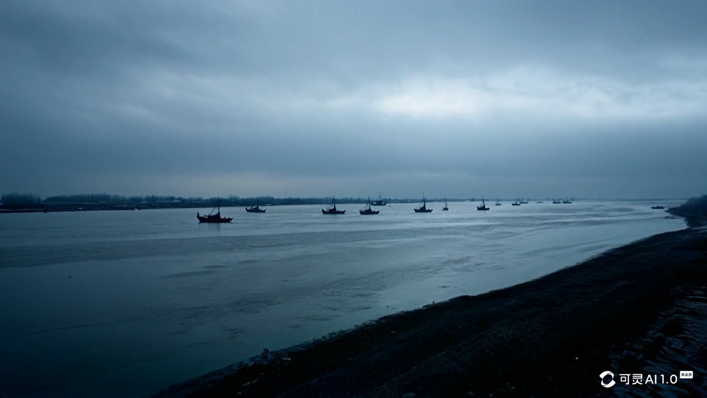
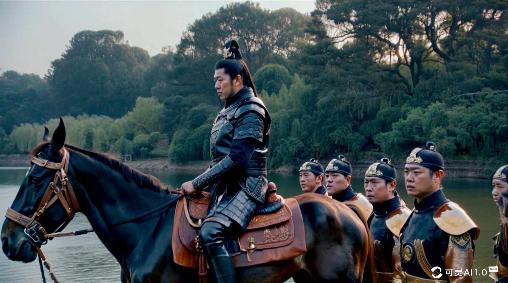
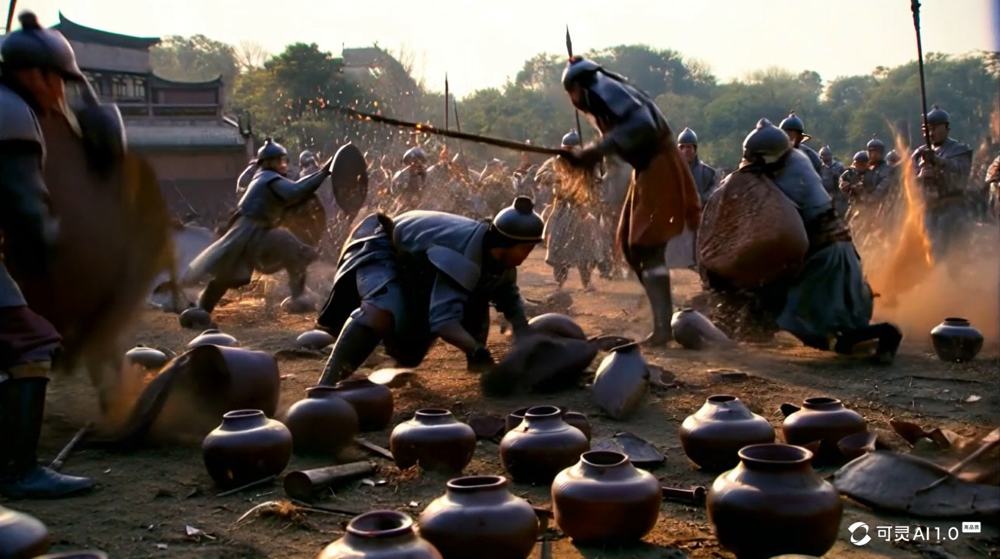
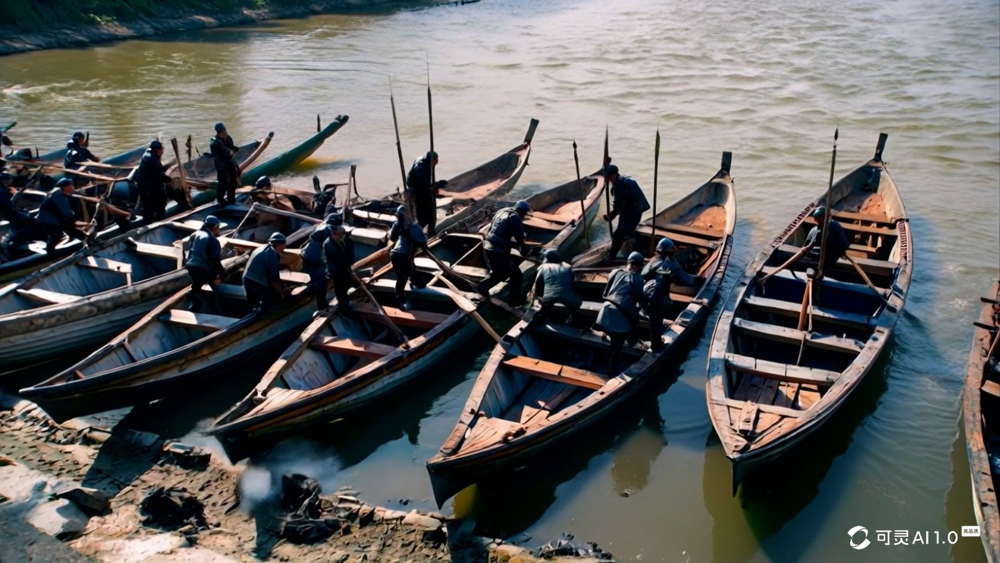
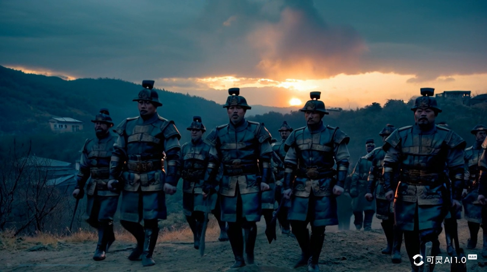
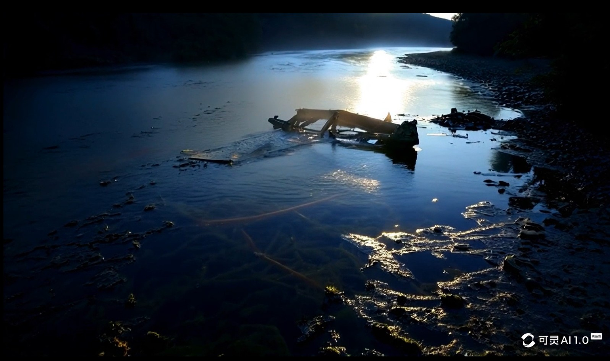

古代中国，一片苍茫的江边，寒风刺骨，天空阴沉，远处的战船如同孤岛一般漂浮在浑浊的水面上。
在江对岸，有一个将军，骑在战马上，披着黑色战甲。四周有士兵站立，他们神色凝重而紧张。
好几个古代士兵迅速拿起武器，朝着营地中的锅开始猛砸。金属撞击产生火光。锅被打破。
中国古代士兵们将船只砸碎，推入江中，一艘艘船随着沉入水底消失。
随着夜幕降临，四周的气氛愈加沉重，战鼓轰鸣，中国古代的士兵们装备整齐，踏着沉默的步伐走向战场。
沉没的船只在大江中，微弱的月光下隐约可见。
